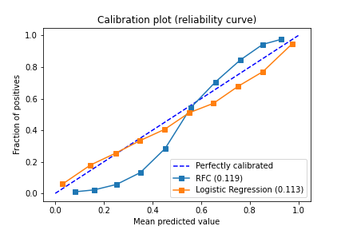
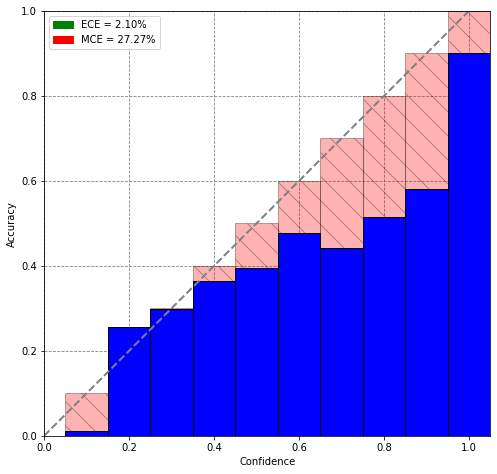

Model calibration is a model postprocessing operation dedicated to improving probability estimates. Calibration helps researchers to interpret results better, provide correct error analysis, and confidently apply models in the hight risks applications.
Model calibration is needed when you need to get a model which predicts fair probabilities for a given example. But what is the right probabilities and why is it so important?
Let's take a view at the next example. Imagine a situation you have to model A and B. Both models have 90% accuracy, and at the same time, models have different estimations for the N examples 0.91 and 0.99 respectively. Which model is the best? Take a few seconds to think about it!
You are right, we should say model A is the best one because it understands its answers and it's not so overconfident as B. Model A takes into account its possible mistakes and helps to researcher not to overestimate itself. Also, a model A can be called a "good calibrated model" because it knows that in 9% of cases it might have an error and it's pretty much close to the truth, because the evaluated accuracy is equal to 90%.
I have experience in working with personal medical data which was needed, pretty obvious, for models developing in the healthcare industry. I and my team were building models to evaluate the probability of the person being in a risk group for some disease. Eventually, the prepared model was used for large-scale predictions to provide relevant to the disease patients which after should pass a bunch of medical tests and doctor visits to prove the diagnosis. And it was super important to select them carefully because some of the tests are very expensive and the most relevant patients must be checked as soon as possible to avoid dramatic consequences.
Let me explain with a simple story, it might make everything clear. The beginning of the story might remind you already described example in the intro, but think deeper about the second part, it will be the main point now.
Patient P got some problems with the lungs. P has dyspnea and cough. P comest to the doctor D1 and tells him about problems. D1 tells him that the reason of the problems is the overweight and the late spring. P began to walk more and noticed harder breathing + P has allergies. Five days after the visit P died because of the COVID. Another situation, P comes to doctor D2 and tells him everything as well. D2 is a little bit more humble and doesn't overestimate himself. D2 tells absolutely the same to P but also found out that P doesn't have a sense of smell and looks weaker than usual. D2 decided to send a person to the tests and other doctors and COVID was detected, so P's life was saved.
Conclusion. Both doctors gave the wrong diagnosis, but the second one noticed some other symptoms and questioned the decision which was a really crucial moment. D2, if transfer human confidence to the model's probabilities, was calibrated.
Predicted class probability - predicted by the classification model probability that an example belongs to the positive class.
Bins - the intervals of some scale. For instance, 10 bins and the scale from 0 to 1 might be represented as intervals among [0.0, 0.1, 0.2, ... 0.9, 1.0].
Perfectly calibrated model - the model whose prediction probabilities mirror the labeled examples ratio in the bin. Or, model if for any p, a prediction of a class with confidence p is correct 100*p percent of the time. $${{\mathbb{P}(\hat y=y |\hat p=p) = p, \forall p \in [0,1]}}$$
In practical appliations the idea of model calibration might be really useful if not viable. When it might be applied:
In the picture below we can see three lines: for the perfectly calibrated model, LR, and RFC. Comparing RFC and LR we will say that LR is calibrated better than RF model. It's also interesting to notice that linear models such as LR and MLP (Not deep models) always are more calibrated than tree-like or SVC. In the case of tree-like models it usually ensembles and in order to get good calibration you also need to have values close to 0 or 1, but in ensembles, it's harder to get such values because of the nature of averaging decision among the multiple trees, but in the case of SVC the reason in the using of margin which also pushes values away from 0-1 because it wants to focus in the harder examples first and find the decision boundary for the hard samples of data.
I dont realy think it's convenient to build such visualisation as above. Maybe we might make some metrics to evaluate how how good model is calibrated? Not really, such metrics already exists.
The goal we are trying to reaching. Objective function, let's say. $${{ \mathbb{E}_{\hat p}[|\mathbb{P}(\hat y = y |\hat p = p) - p) |] }}$$ ECE and MCE approx functions look like: $${{ ECE = \sum_{m=1}^{M} \frac{|B_{m}|}{n} |acc(B_{m}) - conf(B_{m})| }}$$ $${{ MCE = max_{m \in [1..M]}(|acc(B_{m}) - conf(B_{m})|) }}$$
Where: $${{ acc(B_{m}) = \frac{1}{|B_{m}|} \sum_{i \in B_{m}}^{M}1(\hat y_{i} = y_{i}) }}$$ $${{ conf(B_{m}) = \frac{1}{|B_{m}|} \sum_{i \in B_{m}}^{M}\hat p_{i} }}$$
The image below shows how MCE and ECE functions distributions might look like.
As a usage example, you can utilize the postprocessing model which aligns the model predictions making them calibrated. For this purpose, you should holdout the dataset for calibration and fit the calibration model on the base model predictions, where input is predicted probabilities and output is the real class value.
There are at least a couple of methods you can calibrate your model with. The most popular ones remain to be:
Although some other alternatives are possible (for instance the tempered version of Platt scaling)
Platt scaling is tantamount to fitting a logistic regression line to the calibration plot. It works well for small datasets, but it assumes that the calibration curve is S-shaped (the only shape that the logistic regression line can fit).
In general, isotonic regression fits a non-decreasing line to a sequence of points in such a way as to make the line as close to the original points as possible. When applied to the problem of calibration, the technique aims to perform the regression on the original calibration curve. The main advantage of using this method over Platt scaling is the fact that it doesn't require the curve to be S-shaped. Its downside, however, is its sensitivity to outliers (it can overfit quite easily) and thus works bests for large datasets - it's often recommended only if the calibration set has more than a thousand examples.